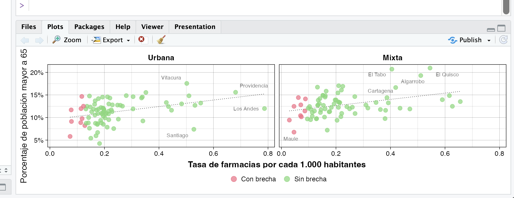
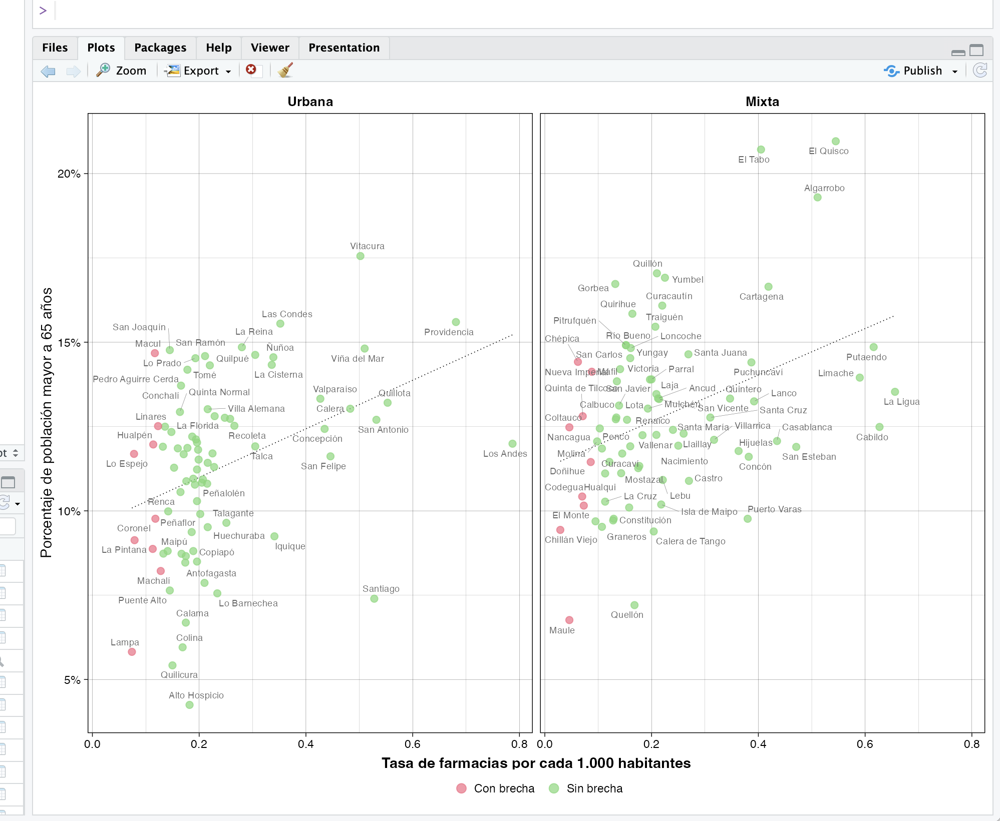
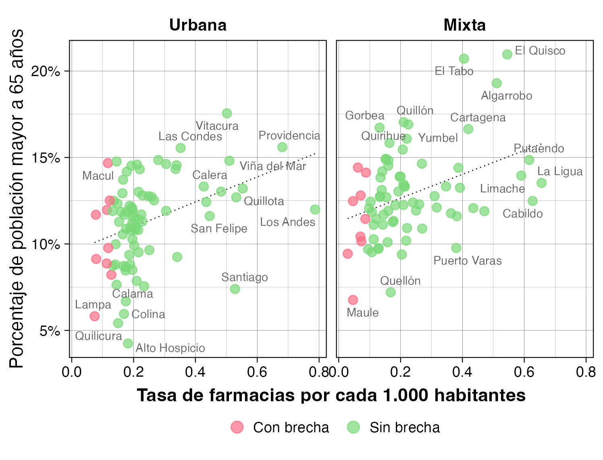

Controla las dimensiones de tus gráficos con {ggview}
8/7/2025
{ggview} es un paquete de R que te ayuda a crear gráficos en {ggplot2} manteniendo un tamaño fijo.
En RStudio, los gráficos que aparecen en el panel de gráficos (Plots) se adaptan al tamaño de dicho panel. Por ejemplo, si tu panel es chico, el gráfico no tendría espacio para verse bien:
Pero si amplías el tamaño del panel lo suficiente, el gráfico se verá mejor:
Esto es conveniente para ir explorando visualizaciones, pero puede confundirte cuando quieras guardar el gráfico. Una vez que tu gráfico está listo, procedes a guardarlo…
ggsave("grafico.jpg")
Pero cuando abres el gráfico, sorpresa, se ve distinto! 🙄
Esto es porque las dimensiones del panel Plots no son las mismas que las dimensiones con que se guardan por defecto los gráficos. En la función ggsave() puedes especificar ancho, alto y resolución de la imagen que se va a guardar. Entonces, lo que podrías hacer es intentar configurar ggsave() para que el gráfico se guarde como tú esperas… pero a veces esto se vuelve en un juego de ir adivinando, intentando números varias veces hasta que le achuntas al gráfico que esperabas.
Una mejor alternativa es usar {ggview} para previsualizar tus gráficos con un tamaño fijo:
library(ggview)
grafico + canvas(7, 5)
De esta forma, no importa el tamaño de tu ventana de RStudio: tu gráfico se previsualizará con la resolución y proporción que tu especifiques.
Recomiendo empezar a usar ggview::canvas() cuando tu gráfico ya está casi completo y te pones a afinar detalles estéticos finales.
Cuando ya sea la hora de guardar el gráfico como una imagen, si usas la función ggview::save_ggplot() (no confundir con la común, ggsave()), el gráfico se guardará con las dimensiones que habías puesto en canvas() y se verá exactamente como lo estabas previsualizando en RStudio!
grafico_2 <- grafico + canvas(7, 5)
save_ggplot(grafico_2, "grafico_2.jpg") # mantiene las dimensiones
Instala
{ggview} ejecutando lo siguiente en tu consola:
install.packages("ggview")